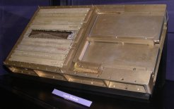
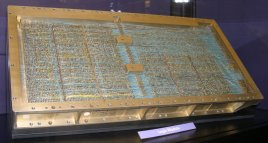

What is yaAGC?
yaAGC is a computer program
which emulates the behavior of the "Block 2" Apollo Guidance
Computer (AGC). (There was also an earlier "Block 1" AGC that never flew in any manned
missions.) It is a virtual computer (existing within, for
example, a desktop PC) which is capable of running software written
for the original AGCs used in the Apollo project. yaAGC emulates only the computer
itself, and not the peripheral devices used by the AGC. For
example, the display/keyboard (DSKY) used by the AGC is a peripheral
device and is emulated by a completely different computer program
called yaDSKY. Just
as the true AGC and DSKY communicated between themselves by mean of
wiring, the virtual yaAGC and yaDSKY communicate between themselves
using communication channels (sockets) that act like virtual
wires.
Similarly, as a "computer", yaAGC
by itself provided little or no functionality. To be useful,
it needs to be "loaded" with appropriate flight software—in other
words, with the Command Module (CM) or Lunar Module (LM)
flight-software written for the original Apollo
missions. The CM and LM software are called Colossus and Luminary, respectively.
What, Exactly, is Being Simulated?

- The yaAGC and yaDSKY programs simulate the
center two blocks in the figure above. The actual Block II
AGC measured 24.250"×12.433"×5.974" (61.595×31.580×15.174 cm),
weighed 70.1 pounds (31.8 kg), and drew 2.5A of current at 28V
DC. The DSKY measured 8.124"×8.000×6.91"
(21.635×20.320×17.551 cm) and weighed 17.8 pounds (8.1
kg). (Since you may see slightly-different approximate
figures floating around elsewhere, I'll just note that the
dimensions quoted here are from the Apollo 11 Lunar Module
original engineering drawings for
the AGC and for
the DSKY, while the weights are from the
so-called weight & balance report.)
- The CPU had a memory cycling time (MCT) of 11.7
microseconds. The modern reader, reading this, probably imagines
that by "CPU" we are referring to a single integrated circuit
(or "chip"). In fact, integrated circuits were too new and
too risky (as well as too expensive) at that time to be
used. At some point, a few integrated circuits were added
to act as "flip-flops" for some of the CPU registers; but the
CPU itself was not, by any stretch of the imagination, an
integrated circuit. The instruction timing varies from 1
MCT up to 6 MCT, but most instructions execute in 2 MCT. The
11.7 microsecond cycle is subdivided at the hardware level
into 12 shorter time-periods derived from a 1024 KHz clock.
However, for the purpose of the yaAGC simulation, only the basic 11.7
microsecond cycle-time is of interest.The instruction set of the
AGC is apparently implemented as a kind of microcode, and the
microcode instructions are executed in the 12 subdivisions of
the clock cycle. Since the microcode and the hidden register set
it uses are not accessible to programmers, I've not bothered to
carry the simulation down to the microcode level. However,
examining the microcode is useful in understanding the detailed
workings of some of the assembly-language operations.
- Memory and registers are 16 bits, consisting of 15 bits of
data, plus one bit of odd parity (used for detection of memory
errors). The parity bit is not simulated by yaAGC.
- Fixed memory—i.e., memory which cannot be modified at runtime,
for program code, constants, and so forth. There are 38912
15-bit words of ROM at addresses 4000-117777 (octal). This ROM
was implemented not in integrated circuits, but in "core"
memory—consisting of many small doughnuts of Permalloy wire threaded
into a braid of extremely fine wires. This made the cost of
program changes very high, since changes could only be
incorporated by having Raytheon Corp. rebuild the core-memory
assembly. Each of the cores could encode as many as 64
bits of memory, since 64 wires could be threaded through each
core, so that even though over 600,000 bits needed to be coded,
less than 10,000 cores were used. A small portion of the
core rope is seen below.
- Erasable memory—i.e., memory which can be modified at runtime.
There are 2048 15-bit words of erasable memory at
addresses 0-3777 (octal). Locations 0-17 (octal)
correspond to what might be thought of as CPU registers, while
20-57 (octal) are "counters", and 60-3777 (octal)
are general-purpose RAM. The erasable memory was
implemented by means of ferromagnetic cores, but not the same as
the core-rope seen at the right.
- Memory banks. It is important to note that while erasable and
fixed memory formed a space of continous memory, logically
addressed from 0-117777 (octal), that 16 addressing bits are
needed but that no register in the AGC (including the
program-counter) is 16-bits wide. To get around this problem,
extra addressing bits are taken from special bank-selection
registers and combined with the program counter or with
addresses embedded within program instructions to provide full
16-bit addresses.
- I/O channels. There were potentially 512 i/o ports with
"channel numbers" from 0-777 (octal). Some few of the i/o
channels correspond to erasable-memory locations. The
others were used to address peripheral devices (such as the
DSKY) for telemetry uplink/downlink, and so on.
A small section of the cores in the
"core rope" non-volatile memory of the AGC. (The
photo was taken from the web; it was credited to
Raytheon Corp.)
|

Logic modules, plugged into a backplane.
Though you cannot tell it from this photo, if the
modules were disassembled, you would see that they are
of "welded cordwood" construction. What that means
is that the modules are full of cylindrical holes, like
swiss cheese; the electrical components, such a
resistors, slide into these holes, and their leads
protrude from either side of the module. Wires are
welded—not
soldered—onto
the leads to interconnect the components. (Photo
by Stephan Hotto, taken at the Computer History Museum
in Mountain View, California.)
|

The backplane the logic and memory
modules which the logic and memory modules plug
into. Notice that it is wire-wrapped. Even
the production models were wire-wrapped, and not just
the engineering models. (Photo by Stephan Hotto,
taken at the Computer History Museum in Mountain View,
California.)
|
Invoking yaAGC
yaAGC is a command-line
program that requires no user interaction once started. The
syntax is
yaAGC [OPTIONS] --core=BinaryExecutable
The BinaryExecutable will
be the name of a file containing an AGC core-rope binary image,
either downloaded or else assembled
from Luminary or Colossus source code using yaYUL. If a complete pathname for BinaryExecutable is not
specified, then yaAGC will
look first in the current directory, and then (for software versions
05/06/2004 or later) in the installation directory (which is
/usr/local/bin by default, but which may be changed when yaAGC is built).
I'm not certain the debugging options described below are up-to-date
(see the debugging section instead), but
the other currently-defined options are:
--help
Displays a list of options (such as
this one) and then quits.
--port=Portnum
The yaAGC program and programs simulating peripheral
devices (such as yaDSKY)
have a server/client relationship. yaAGC listens on a set of
ports (by default, 19697 through 19706) for client
connection-requests. The base (lowest) port number can be
changed using the "--port" command-line switch. (The number
of ports scanned remains 10, however. To change the number
of scanned ports requires changing yaAGC's source code and recompiling the
program.) One might wish to change the base port if, for
example, simultaneously running an instance of yaAGC for the CM and another
instance of yaAGC for the
LM. The port ranges of the two instances of yaAGC shouldn't overlap, so
one instance could be run (for example) with the command-line
switch "--port=19707".
--debug-dsky
This setting is useful for
debugging a DSKY simulation (such as yaDSKY). This switch causes the "--core"
setting to be ignored (in fact, the "--core" switch can be
omitted). Instead of running an AGC executable, yaAGC simply echoes command
sequences back to the DSKY upon receiving keystrokes from the
DSKY. These command sequences are defined in the
configuration file (see "--cfg" below), and can actually relate to
any peripheral devices (not just the DSKY).
--debug-deda
This setting is useful for
debugging a DEDA simulation (such as yaDEDA). Unlike --debug-dsky, yaAGC runs the AGC simulation
as normal. But in addition, it interprets communications
from yaDEDA. (In
normal operation, of course, it completely ignores data
originating from yaDEDA,
or indeed any other messages in yaAGS
format.) For each communication received from yaDEDA (for key sequences such
as CLR-OctalDigit-OctalDigit-OctalDigit-READOUT)
it
prints out a message indicating what was received. For the
specific key sequence just mentioned, it goes further and acts
similarly to the AEA software, in that it interprets the 3 octal
digits as an address in erasable memory, and outputs the value
found at that address (in octal) every 1/2 second to yaDEDA. The addresses
most meaningfully observed in this fashion are timer registers
like 25 (octal) which increment at 10 ms. intervals, and therefore
increments by about 50 (62 octal) every 1/2 second.
--deda-quiet
This setting is used in conjunction
with --debug-deda to eliminate the outputs from yaAGC to yaDEDA which --debug-deda
normally creates. In other words, lets yaAGC parse the messages being
received from yaDEDA, but
never to send any itself.
--cfg=Filename
This presently has no effect unless
used with "--debug-dsky". It causes a configuration file to
be loaded which defines the command sequences used in --debug-dsky
mode. The same directory assumptions are used in searching
for the file as are used with the --core switch (see above).
Full instructions can be found within the provided sample
files (presently LM.ini, CM.ini, LM1.ini, and
CM0.ini). The configuration files are really provided for
use with the yaDSKY
program, and the same file should be selected for yaAGC as is selected for yaDSKY (if --debug-dsky is
going to be used). Only the "DEBUG" lines within the
configuration files are relevant to yaAGC. If no configuration file is selected,
or if no DEBUG lines appear within the configuration file, then
--debug-dsky will be non-functional.
--debug
Causes the AGC program to halt
prior to executing its first instruction, and activates a
debugging mode (very primitive) in which you can do things like
examine AGC registers, single-step through the AGC program,
etc. This mode is described further
below.
In
Linux (though not necessarily in *BSD, MacOS X, or Win32), you can
put
yaAGC into debug mode
without the --debug switch, simply by hitting the carriage-return
key any time after starting the program; the AGC program will
simply be halted wherever it is, and you can begin debugging at
that point.
For versions 20050728 and later, yaYUL outputs symbol-table
information that yaAGC
can use in "--debug" mode to aid symbolic debugging. In
other words, if you load a symbol table into yaAGC, then in debug-mode you
can sometimes use program labels and variable names rather than
having to know the absolute numerical addresses for
everything. The --symtab switch is used to specify the name
of the symbol-table file. The same search path is used as
for --core and --cfg. Since the symbol tables for
Luminary131 and Colossus249 (namely, Luminary131.symtab and
Colossus249.symtab) are "installed" along with the executables,
you can simply say "--symtab=Luminary131.symtab" or
"--symtab=Colossus249.symtab". However, if you want to
assemble your own AGC source code, the symbol table output by yaYUL will be named the same
as your source file, but with ".symtab" suffixed to it. For
example, if you assemble "MyFile.s", then the symbol table will be
"MyFile.s.symtab". In this case, you'll want to use the
complete pathname for the symbol-table as the filename for
--symtab. This feature, and all of the debugging commands
associated with it are courtesy of Jordan Slott. (Thanks,
Jordan.)
--resume=Filename
Normally when the emulator runs an
AGC program it sets all i/o channels, erasable memory, and hidden
CPU state variables to what it considers reasonable power-up
defaults. (But see "--dump-time", below.) The --resume
option instead allows these items to be loaded from a
previously-created file. (The file itself is created from
--debug mode using the COREDUMP command as explained below.)
In effect, this allows execution to continue from the exact point
in the AGC program at which the COREDUMP was made, rather than
forcing the AGC program to its reset condition. The file
must be either in the current directory, or else a full pathname
must be given for it.
--dump-time=N
For versions 20050705 and later, yaAGC attempts to save the
contents of erasable memory, and to restore them automatically at
startup (but not i/o channels and hidden CPU state
variables). This means that things like pad loads are
preserved even when the AGC is "powered down", just as they would
have been in the true AGC's core memory. In an
effort to keep this from increasing system overhead too much, the
saving is actually done only every N seconds (10, by default). The data is
saved either in a file called LM.core or CM.core, and is
compatible with the "core dumps" described above for the
"--resume" switch. You can start with a clean system by
erasing LM.core or CM.core. Or, you can use
"--resume=LM.core" or "--resume=CM.core" if you'd like to restore
more than just the erasable memory. Because separate files
are used for the LM and CM, you can run both simulations at once
without any conflict. However, if you want to run more than
one LM simulation (or more than one CM simulation), you'd better
start them from different directories, to make sure that the .core
files are stored in different directories.
--interlace=N
On some PC's the act of checking
the socket connections (i.e., the mechanism used by yaAGC to communicate with yaDSKY and/or other peripheral
devices) can make the simulation very sluggish. Therefore yaAGC only performs this check
every N-th CPU
instruction, where by default N=50.
Changing
the value of N does not
affect the reliability of the communication (i.e., no data is
lost). Making N
smaller theoretically improves the responsiveness of the system,
except on slow PC's where the overhead from checking the sockets
may exceed the computing time taken by the simulation. For
example, a value of N=1
works fine on my ~2.5 GHz P4 Linux and Windows XP systems, but
results in about a 10-to-1 slowdown of the simulation on my 450
MHz P2 Windows 98 system. On the latter system, a value of N=10 seems to work
perfectly. Conversely, increasing N reduces the overhead, but results in a larger
time-jitter in signalling, and (in theory) for large enough values
a steadily-increasing backlog of data waiting to be
delivered. As far as time-jitter is concerned, it's
important to realize that yaAGC
does not actually execute a machine cycle every 11.7 microseconds,
but merely keeps up appearances of doing so in a way not
detectable by the user. Therefore, there is a pretty large
time-jitter anyway, and the amount of jitter is dependent on both
the speed of the PC and on the operating system used by the
PC. The value N=50
has been chosen in the belief that it will work well for most
PC's, and does work well on all of the example systems mentioned
above. (On my 150 MHz P1, on the other hand, the simulation
runs about 50% slow no matter what the setting of
--interlace.) Nevertheless, the --interlace switch may be of
value when fine-tuning of the timing is required.
--cdu-log
Used only for debugging.
Causes a file called yaAGC.cdulog to be created, containing data
related to the bandwidth-limiting of CDU inputs PCDU and MCDU.
Verification of yaAGC Correctness
We're very lucky in this regard, in that I can provide pretty
confident assurance that yaAGC does execute AGC code
correctly.
How can I make such a bold statement? Well, for the first 10
years of the Virtual AGC project, I couldn't really have done so
with any confidence ... and would have been overreaching if I had
done so. Some things worked, and some didn't. Although
to be fair, many things that "didn't work" actually worked well
enough and couldn't have produced any errors, and were usually very
obscure anyway. But I couldn't guarantee it. The problem
was basically that there was no way to compare the behavior of yaAGC
vs a real AGC, plus the fact that while the original AGC software
had contained self-test code, almost all of that self-test code had
been removed by the time of Luminary and Colossus in
order to save precious memory. In other words, we didn't have
any of the test code.
However, there was a textual description of the test code in one of
the original Apollo documents, "Block II AGC Self-Check and
Show-Banksum" by Edwin Smally. Smally's described tests give
the CPU a pretty rigorous (if not 100% complete) going-over.
So I went through Smally's document in detail, and wrote an AGC
program myself that performed each of his tests, as well as other
tests that seemed reasonable to me from other available
documents. I called this the Validation test suite and
corrected yaAGC until it could pass the Validation testing.
But however helpful, that falls far short of a 100% guarantee of
completely correct operation, even though I had to content myself
with having done as much as I could.
That's all changed now.
What has changed? Two things. First, we eventually
acquired an early AGC program called AURORA from the
collection of the original AGC developer Don Eyles. AURORA
is old enough that it actually still contains the full built-in test
software. In fact, it is the last such software to contain the
full self-test, and was itself used back during the original Project
Apollo to perform acceptance tests on AGCs. Second, the
electrical schematics of the Block II AGC, or at least a large
enough subset of those schematics, had eventually become available,
and people began to be interested in building cloned AGC hardware
from those schematics. One such person was developer Mike
Stewart. Mike transcribed those schematics into CAD form, and
from there transformed the electrical design into the Verilog
programming language with two aims: a) to simulate the AGC
electrical design using a Verilog simulator; and b) once the design
was fully debugged, to create his own hardware AGC by creating FPGAs
from the Verilog description. The Verilog simulation is very
complete, and able to run actual AGC source code ... which of
course, we had! Mike compared the Verilog simulation of
the vs the behavior of yaAGC and found discrepancies ...
i.e., bugs. Then he fixed those bugs, either in his CAD
transcription or else in yaAGC, depending on where the
discrepancies came from.
In case you wonder just how much detail we're talking about,
consider the case of the AGC's DV (divide)
instruction. DV operates on two numbers which it
interprets as being between 0.0 and 1.0. It requires
that the divisor be greater than or equal to the dividend in
absolute value, and we are told by one document that if the divisor
is actually greater than the dividend then "we get total
nonsense". Mike didn't mind the result being "total nonsense",
but he wanted yaAGC and the Verilog simulation to give exactly the same
bit patterns of "total nonsense". Now in practice, it simply
doesn't matter, since the AGC code was written in such a way that
the conditions were always met, so no nonsense could occur
anyway. But Mike worked hard, and eventually the total
nonsense matched. And he did that with everything, not just
with DV. Great work, Mike!
The end result of Mike's efforts is thus that we have two
independently-developed implementations of the AGC, namely yaAGC
and the Verilog description of the AGC's electrical schematics,
which not only agree with each other, but which can pass the full
built-in-test suite in AURORA. I'm happy to interpret
that as meaning that yaAGC works correctly now.
Debugging Mode
The debugging capabilities of yaAGC have completely changed
over time. My original debugging features are no longer
supported, as of mid-2009. The best place to read about the
debugging features now is in the wiki for our GitHub
repository:
This page is available under the Creative
Commons
No Rights Reserved License
Last modified by Ronald Burkey on
2022-10-27.

{kind=link}
{kind=link}
{kind=link}